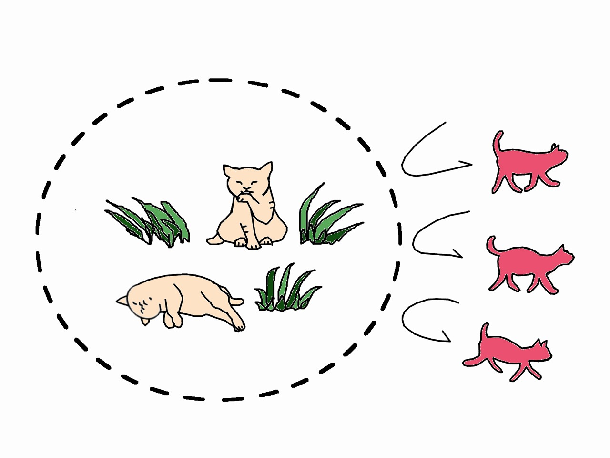
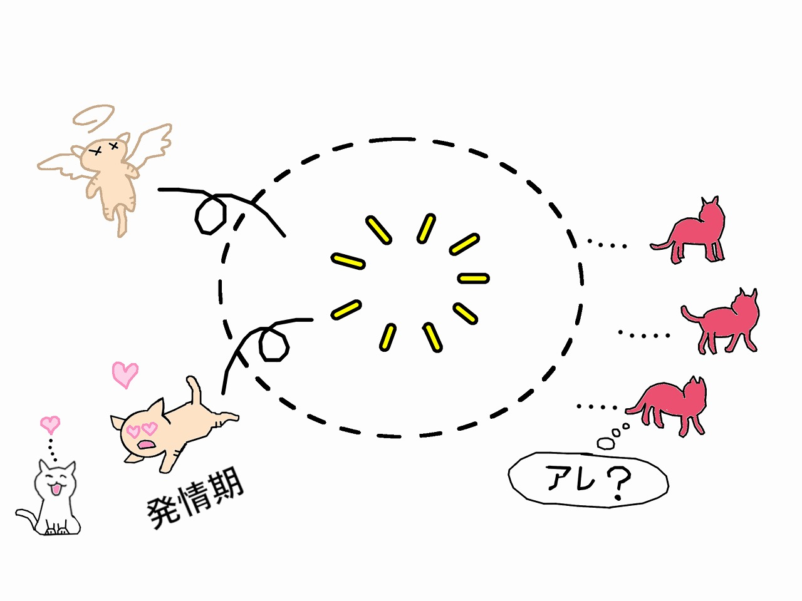
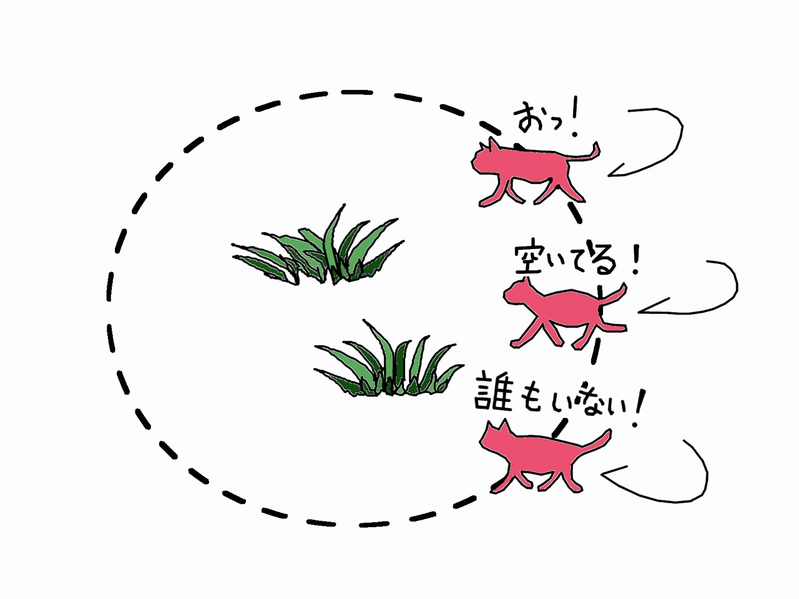
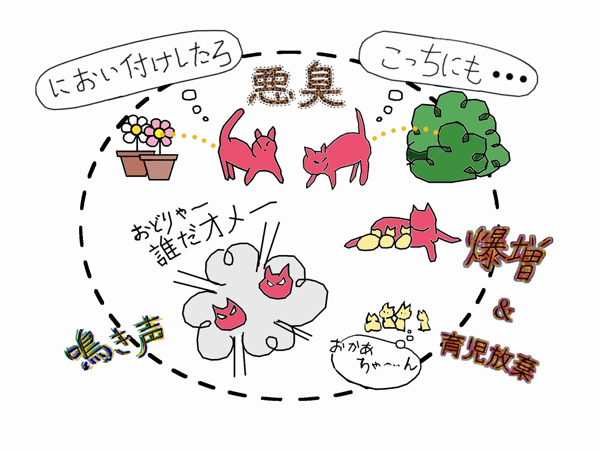
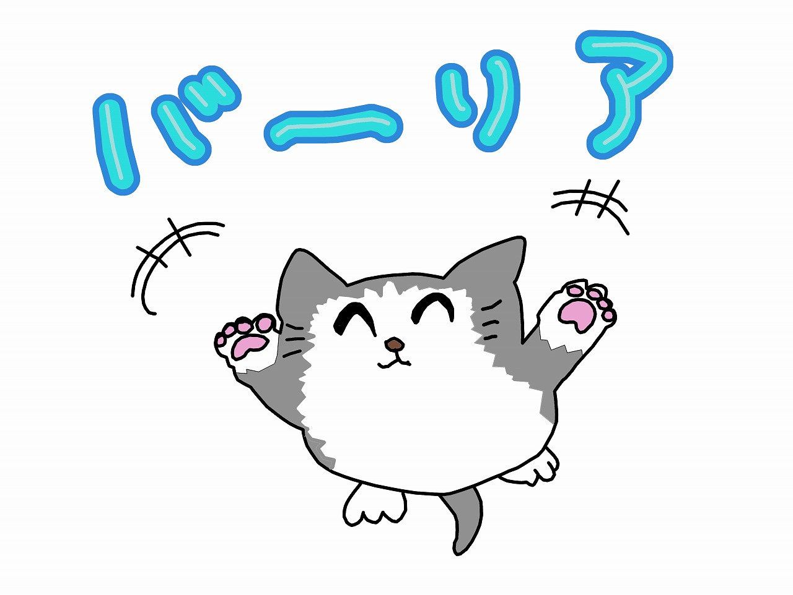

という事で、猫はナワバリ主が居た方が爆増しにくかったり、臭くなかったり、うるさくなかったりします。

そしてこのナワバリ現象は避妊去勢したネコにも習性として残り、上記問題の解消に一役買ってくれたりします。
エサやトイレについてご近所のご理解があればより理想的ですね。
※ ナワバリ現象は英語の「Vacuum Effect(直訳：真空効果)」を当ブログが勝手に訳付けしたものであり、教科書や辞書に載っている言葉ではありません。